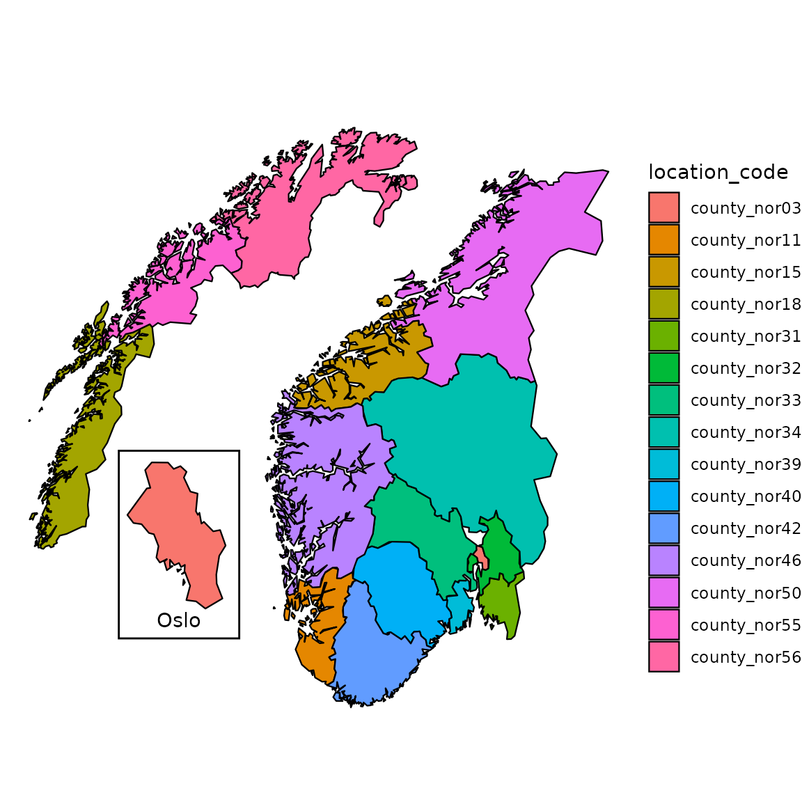
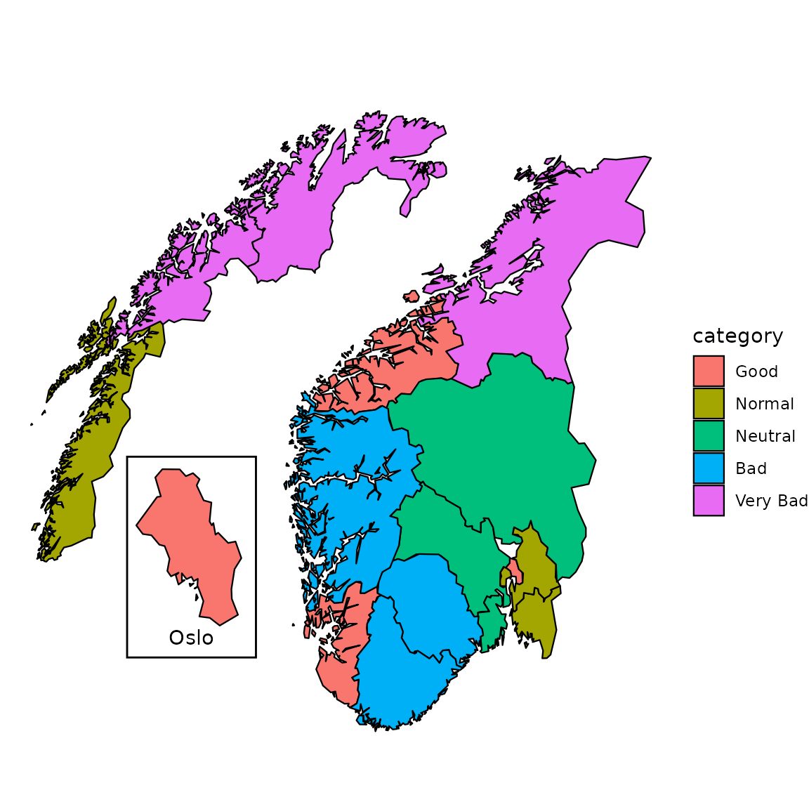
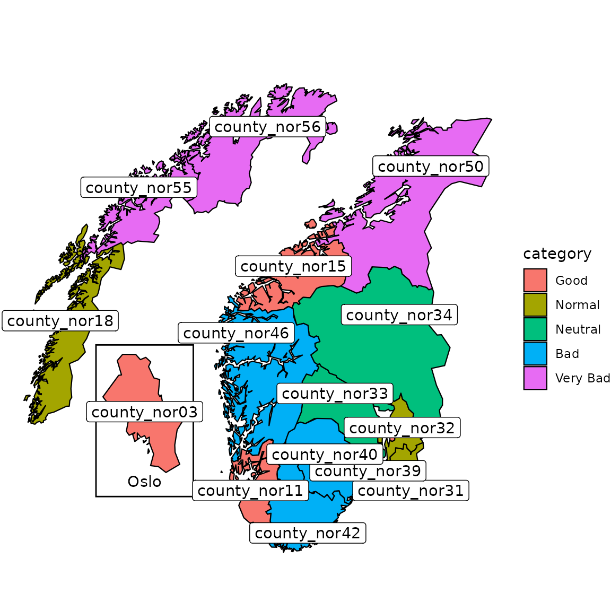
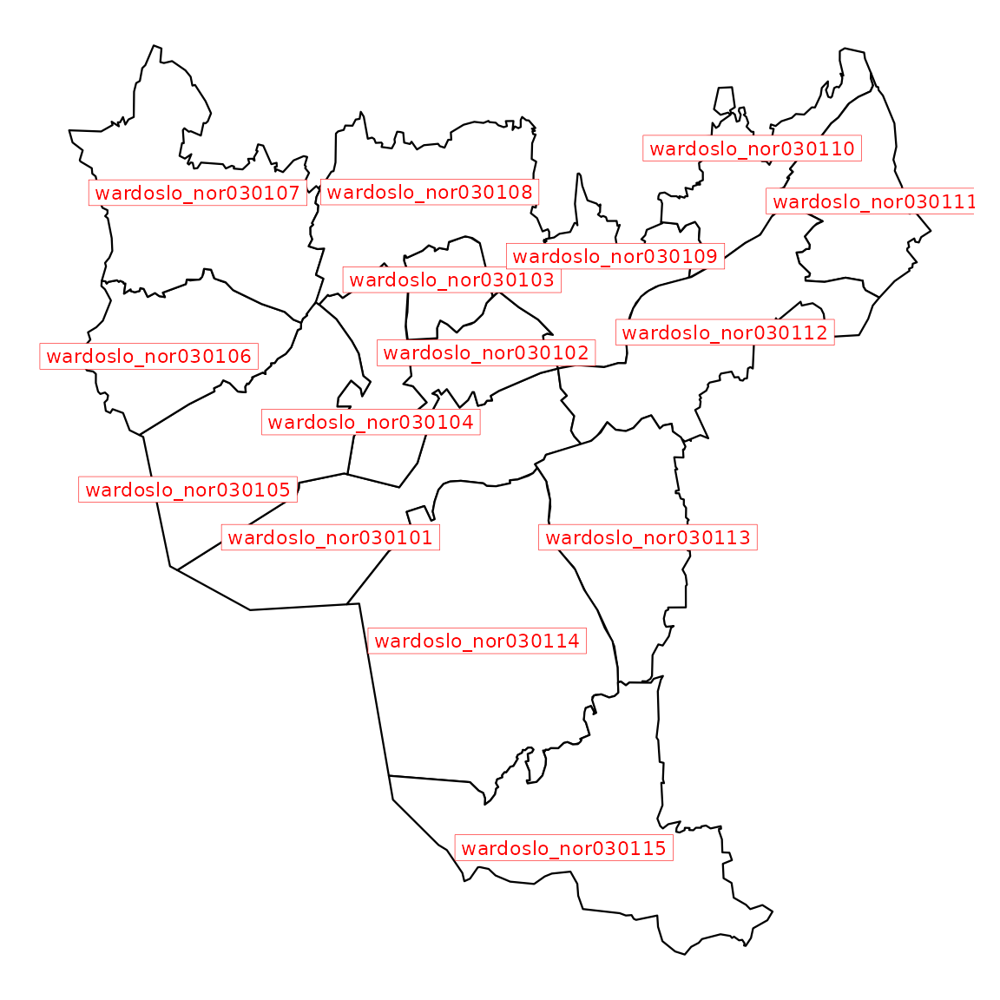
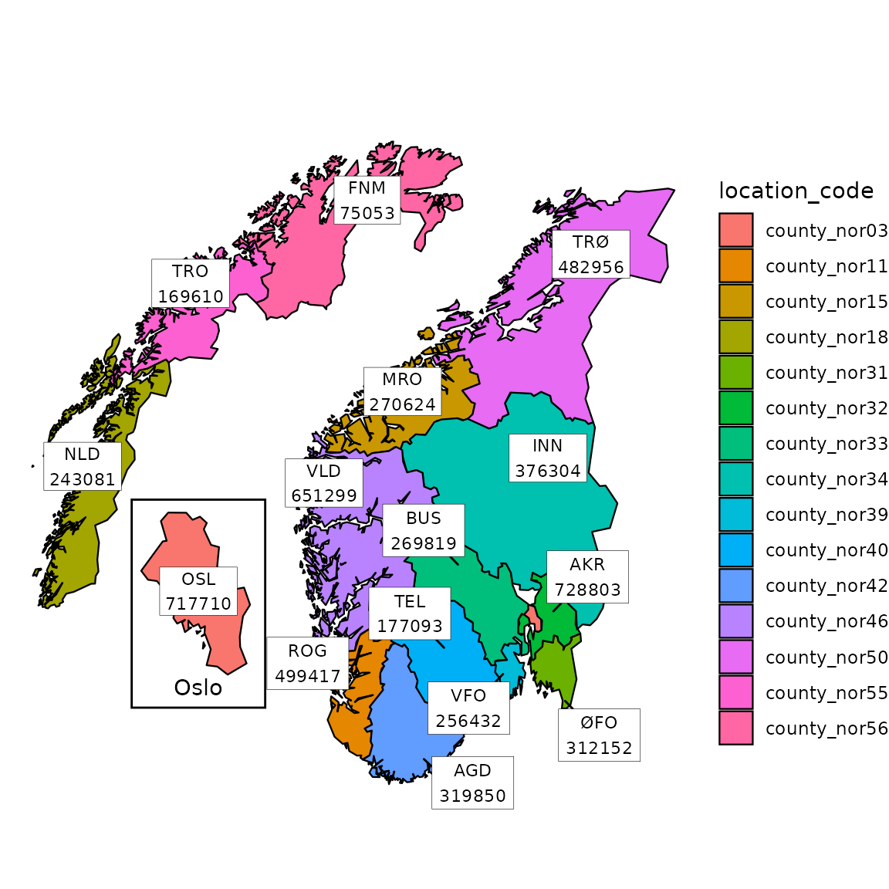
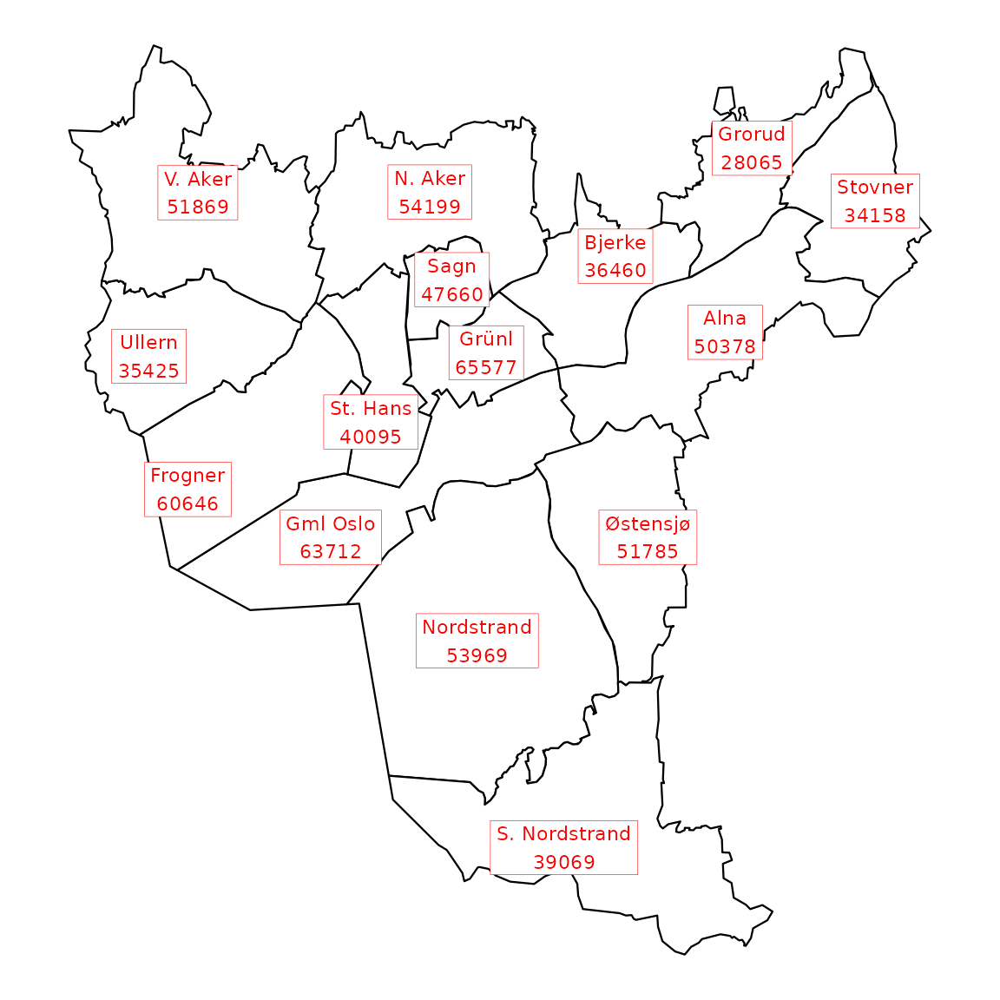

Customize your maps
Richard Aubrey White, Chi Zhang
2021-01-15
Source:vignettes/customization.Rmd
customization.Rmd
library(csmaps)
#> csmaps 2024.9.26
#> https://www.csids.no/csmaps/
library(ggplot2)
library(data.table)
library(magrittr)Colored maps
Automatic coloring by location_code
pd <- copy(csmaps::nor_county_map_b2024_split_dt)
q <- ggplot()
q <- q + csmaps::annotate_oslo_nor_map_bxxxx_split_dt()
q <- q + geom_polygon(
data = pd,
mapping = aes(
x = long,
y = lat,
group = group,
fill = location_code
),
color="black",
linewidth = 0.4
)
q <- q + theme_void()
q <- q + coord_quickmap()
q <- q + labs(title = "")
q
Customized coloring with external information
It is also possible to specify the color by user-defined groups. Here we show an example of assigning different (pseudo) risk level to each county.
pd <- copy(csmaps::nor_county_map_b2024_split_dt)
# assign each location a random category for different colors
location_info <- unique(pd[,c("location_code")])
location_info[,category:=rep(
c("Good","Normal","Neutral","Bad","Very Bad"),
each=3)[1:.N]
]
location_info[,category:=factor(
category,
levels=c("Good","Normal","Neutral","Bad","Very Bad")
)
]
print(location_info)
#> location_code category
#> <char> <fctr>
#> 1: county_nor03 Good
#> 2: county_nor11 Good
#> 3: county_nor15 Good
#> 4: county_nor18 Normal
#> 5: county_nor31 Normal
#> 6: county_nor32 Normal
#> 7: county_nor33 Neutral
#> 8: county_nor34 Neutral
#> 9: county_nor39 Neutral
#> 10: county_nor40 Bad
#> 11: county_nor42 Bad
#> 12: county_nor46 Bad
#> 13: county_nor50 Very Bad
#> 14: county_nor55 Very Bad
#> 15: county_nor56 Very Bad
# join the map data.table
pd[
location_info,
on="location_code",
category:=category
]
q <- ggplot()
q <- q + csmaps::annotate_oslo_nor_map_bxxxx_split_dt()
q <- q + geom_polygon(
data = pd,
mapping = aes(
x = long,
y = lat,
group = group,
fill = category
),
color="black",
linewidth = 0.4
)
q <- q + coord_quickmap()
q <- q + labs(title="")
q <- q + theme_void()
q
Labeled maps
We can add labels of county index onto the maps. There are several options for adding texts on a graph in ggplot2. We recommend geom_label() to add the labels if no label overlap occurs, otherwise we recommend using ggrepel::geom_label_repel().
q <- ggplot()
q <- q + csmaps::annotate_oslo_nor_map_bxxxx_split_dt()
q <- q + geom_polygon(
data = pd,
mapping = aes(
x = long,
y = lat,
group = group,
fill = category
),
color="black",
linewidth = 0.4
)
q <- q + geom_label(
data = csmaps::nor_county_position_geolabels_b2024_split_dt,
mapping = aes(
x = long,
y = lat,
label = location_code
)
)
# ggrepel::geom_label_repel() for avoiding overlap
q <- q + theme_void()
q <- q + coord_quickmap()
q <- q + labs(title = "")
q
Labels can be easily added to other layouts, such as Oslo wards.
q <- ggplot(mapping = aes(x = long, y = lat))
q <- q + geom_polygon(
data = csmaps::oslo_ward_map_b2024_default_dt,
mapping = aes(group = group),
color = "black",
fill = "white",
linewidth = 0.4
)
q <- q + geom_label(
data = csmaps::oslo_ward_position_geolabels_b2024_default_dt,
mapping = aes(label = location_code),
color = "red",
size = 3,
label.size = 0.1,
label.r = grid::unit(0, "lines")
)
q <- q + theme_void()
q <- q + coord_quickmap()
q
Enrich plot with additional data
It is convenient to use csdata package to enrich Norway and Oslo maps with external information, such as location name and population.
Add county name and population to Norway map
# enrich with population and location name
dpop_2024 <- csdata::nor_population_by_age_cats()[
calyear==2024 &
granularity_geo %in% "county"
]
# join, create label
labels <- copy(csmaps::nor_county_position_geolabels_b2024_split_dt)
labels[
dpop_2024,
on = "location_code",
pop_total := pop_jan1_n
]
labels[
csdata::nor_locations_names(),
on = "location_code",
location_name_short := location_name_short
]
labels[, label := paste0(location_name_short, '\n', pop_total)]
print(head(labels))
#> location_code long lat repel pop_total location_name_short
#> <char> <num> <num> <lgcl> <num> <char>
#> 1: county_nor31 11.50 59.00000 TRUE 312152 ØFO
#> 2: county_nor32 11.20 60.03851 TRUE 728803 AKR
#> 3: county_nor33 8.85 60.60000 TRUE 269819 BUS
#> 4: county_nor03 2.20 60.30000 FALSE 717710 OSL
#> 5: county_nor34 11.10 61.90000 FALSE 376304 INN
#> 6: county_nor39 10.00 59.32481 TRUE 256432 VFO
#> label
#> <char>
#> 1: ØFO\n312152
#> 2: AKR\n728803
#> 3: BUS\n269819
#> 4: OSL\n717710
#> 5: INN\n376304
#> 6: VFO\n256432
# plot
pd <- copy(csmaps::nor_county_map_b2024_split_dt)
q <- ggplot()
q <- q + csmaps::annotate_oslo_nor_map_bxxxx_split_dt()
q <- q + geom_polygon(
data = pd,
mapping = aes(
x = long,
y = lat,
group = group,
fill = location_code
),
color="black",
linewidth = 0.4
)
q <- q + ggrepel::geom_label_repel(
data = labels[repel==TRUE],
mapping = aes(x = long, y = lat, label = label),
size = 3,
label.size = 0.1,
label.r = grid::unit(0, "lines"),
min.segment.length = 0
)
q <- q + geom_label(
data = labels[repel==FALSE],
mapping = aes(x = long, y = lat, label = label),
size = 3,
label.size = 0.1,
label.r = grid::unit(0, "lines")
)
q <- q + theme_void()
q <- q + coord_quickmap()
q <- q + labs(title = "")
q
Add location name for ward and population for Oslo map
# enrich with population and location name
dpop_2024 <- csdata::nor_population_by_age_cats()[calyear==2024]
# join, create label
labels <- copy(csmaps::oslo_ward_position_geolabels_b2024_default_dt)
labels[
dpop_2024,
on = "location_code",
pop_total := pop_jan1_n
]
labels[
csdata::nor_locations_names(),
on = "location_code",
location_name_short := location_name_short
]
labels[, label := paste0(location_name_short, '\n', pop_total)]
print(head(labels))
#> location_code long lat pop_total location_name_short
#> <char> <num> <num> <num> <char>
#> 1: wardoslo_nor030101 10.72000 59.89000 63712 Gml Oslo
#> 2: wardoslo_nor030102 10.78000 59.92567 65577 Grünl
#> 3: wardoslo_nor030103 10.76683 59.93981 47660 Sagn
#> 4: wardoslo_nor030104 10.73555 59.91230 40095 St. Hans
#> 5: wardoslo_nor030105 10.66500 59.89925 60646 Frogner
#> 6: wardoslo_nor030106 10.65000 59.92500 35425 Ullern
#> label
#> <char>
#> 1: Gml Oslo\n63712
#> 2: Grünl\n65577
#> 3: Sagn\n47660
#> 4: St. Hans\n40095
#> 5: Frogner\n60646
#> 6: Ullern\n35425
q <- ggplot(mapping = aes(x = long, y = lat))
q <- q + geom_polygon(
data = csmaps::oslo_ward_map_b2024_default_dt,
mapping = aes(group = group),
color = "black",
fill = "white",
linewidth = 0.4
)
q <- q + geom_label(
data = labels,
mapping = aes(label = label),
color = "red",
size = 3,
label.size = 0.1,
label.r = grid::unit(0, "lines")
)
q <- q + theme_void()
q <- q + coord_quickmap()
q